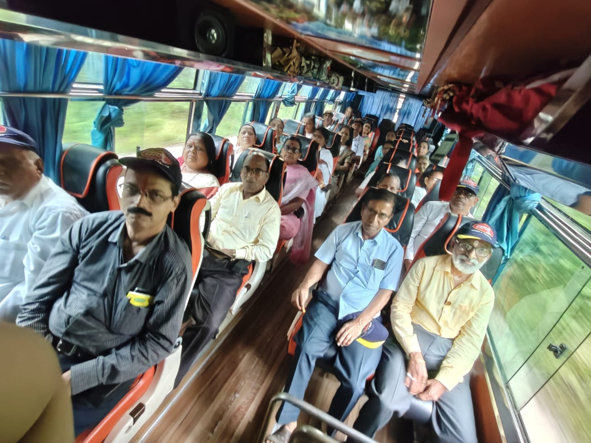

Itinerary

Day 1: Departure
Begin your spiritual journey with a late-night departure from Borivali, Dadar, Thane, Kalyan, Panvel at around 7 PM as we head towards Prati Balaji.

Day 2: Prati Balaji - Morgaon - Siddhatek - Theur - Ranjangaon
- Arrive at Prati Balaji and freshen up for the day ahead. Hot water and common washroom facilities are provided.
- Darshan at Prati Balaji and Jejuri Temple followed by breakfast.
- Visit the shrines at Morgaon and Siddhatek.
- Break for lunch, then visit Theur and Ranjangaon temples.
- Enjoy evening tea/coffee at Ranjangaon. Stay at Ozar overnight.
Day 3: Ozar - Lenyadri - Pali - Mahad
- Darshan at Ozar Ganpati temple with tea/coffee.
- Visit Lenyadri temple after breakfast.
- Continue to Pali after lunch and visit Mahad temple with evening tea/coffee at Mahad.
- Return journey begins in the evening, aiming for drop-offs between 10 PM and midnight.